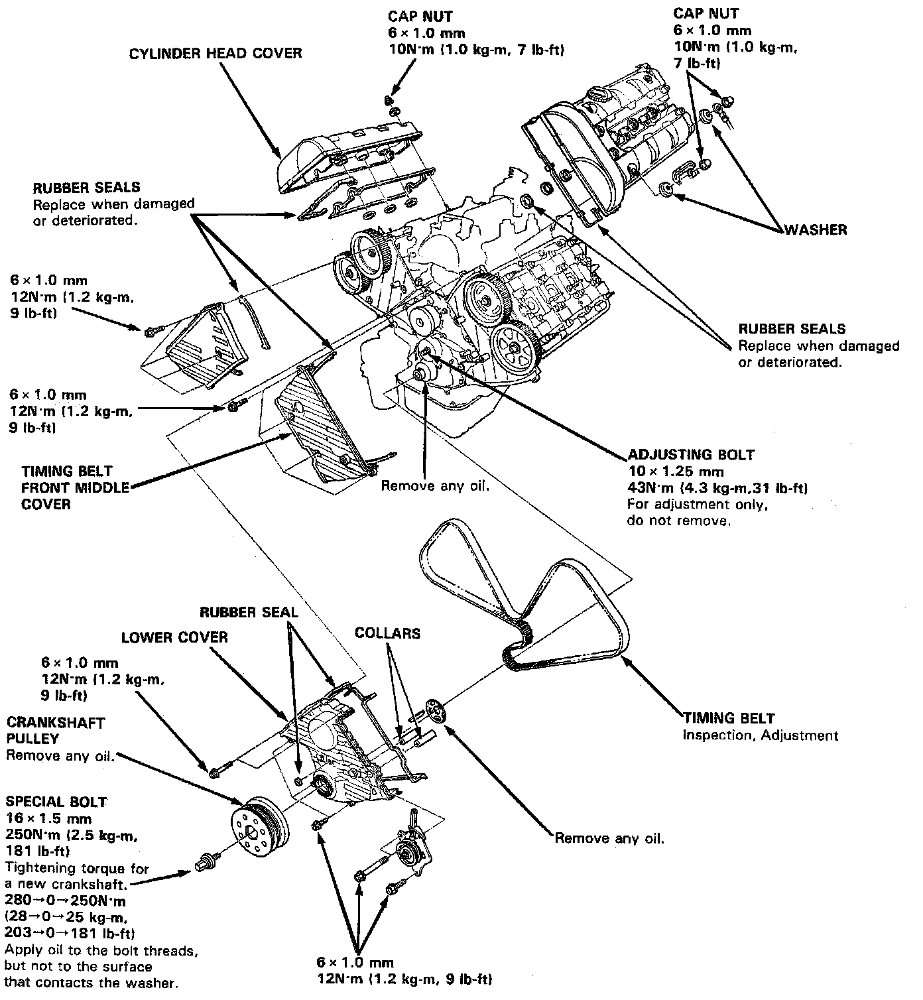

Timing Belt

Timing Belt
NOTE:
- Turn the crankshaft so that the No.1 piston is at top dead center (TDC).
- Replace rubber seals if damaged or deteriorated.
- Prior to installing the cylinder head cover, apply a thin layer of liquid gasket to the mating surface of the cylinder head cover and rubber seals to prevent the rubber seal from falling of.
- After installation, fill the engine with oil up to the specified level, run the engine for more than 3 minutes, then check for oil leakage.
- When installing a new crankshaft;
(1) Tighten the crankshaft pulley bolt to 28O N.m (28 kg.m, 203 lb-ft)
(2) Loosen it
(3) Retighten it to 250 N.m (25 kg.m, 181 lb.ft)